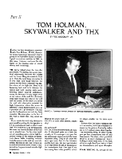
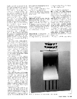
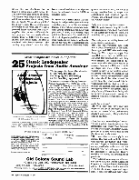
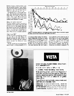
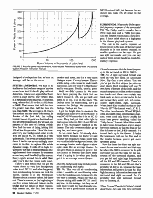
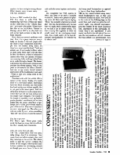
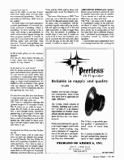
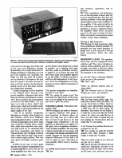
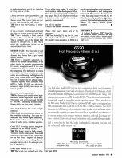

BY REID WOODBURY, JR.
Published in Speaker Builder magazine FIVE/90 (Sept./Oct. 1990).

TH: We've talked about the time displacement. We did that for a good practical relationship between the woofer and the horns. Hang the screen in front of it. Then the next thing you notice is if you stick your head between the screen and the horn, suddenly you realize where al the highs are. They're al bouncing back and forth between the screen and wall, causing nasty comb filtering—many delayed reflections, many hits because it's very bright, even at the bottom of the wall. It's obviously done many round trips between the wall and the screen. So the trick is to cover the wall with absorptive material for high frequencies, where the screen is reflective, which doesn't absorb lows, so it provides the 2-pi boundary. You can see the loudspeakers are built in, flush mounted. The absorption on the face of the wall is rather thin, only about an inch.
If you made the wall fully absorptive you would be putting the loudspeaker in a 4-pi environment, and we don't want that. We want it in a 2-pi environment. We want the fuzz on the face of the wall not to absorb lows. On the other hand, we are launching quite a lot of high frequency energy at the screen, progressively above 5kHz. Anything returned from the screen to the wall we want absorbed. The idea is, the wall works in an acoustical crossover mode where it reinforces low frequencies and absorbs high frequencies.
What is the screen made of?
TH: PVC or some other plastics. Maybe vinyl.
It's perforated?
TH: Oh, it must be perforated. It's usually 50 thousand perfs on a little diamond grid. It's seven percent open, but the percentage open area isn't the most important thing. They're all about the same open area, but it's the thickness and the hole size. We later participated in an experiment to get an equation for the transmission loss. One says if you have many finer holes you'd be in better shape—smaller for the same open area.
It does affect the horn's radiation pattern somewhat, but it has a tendency to square up the pattern. It actually makes the -3, -6, -9 contours come closer together an interesting thing. In other words, you get less transmission loss off axis than on axis. The sheet, when you think about it, is more transparent. You're looking at more open area, if you look at it at an angle than if you look at it dead on. Transparency goes up at off angles.

There are a number of interesting findings. One is, the room acoustics dominate the uniformity of coverage up to between 300 and 400Hz, in a 70,000 cubic foot room. The nodal pattern dominates the uniformity of distribution. It's not the loudspeaker. Above there, the loudspeaker's the most important ingredient in sound field uniformity (Fig. 1). That's one finding.
Also, to prove the loudspeaker system's constant directivity, you measure tone bursts from the screen, and open up a gate as that tone burst passes the microphone. You see the early arrival sound, and that early arrival tone burst is around l0ms long. So that l0ms includes reflections between the horn and the screen, and includes local reflections off the console, because that's rather close to the microphone.
We're trying to do it where people are listening. You get comb filtering because of these reflections at either end. You also find the average response falls off at high frequencies in exactly the same way the pink noise does. They track very well. There is no begging the question, which sound field, direct or reverberant, is more important. With the power response, they are the same. No need to tune it or equalize it. You've done it, period.
The reason for a house curve in large auditoriums is we're measuring long-term pink noise, and what we really should be measuring is the first arrival sound. And since we're using non-constant directivity horns, and the horn directivity is collapsing, plus we're measuring in a reverberant far field, we're seeing a rolloff. If we measured the first arrival, it would be flat. That's why we want an over all rolloff.
Well, fortunately that didn't turn out to be the real reason. In the last few years, the real reason for the house curve has more to do with diffraction about the head, and all these things acoustically going on. They're actually there, but the fact is that we're evaluating ears instead of a microphone.
If you play CDs on this system it's a great shock—it sounds like hi-fi.
And you say, this doesn't sound like a movie at all. What's wrong with this sound system?
It doesn't honk at you?
TH: It doesn't honk! Well, that was a bit difficult for people to get used to. The combination of all these things we've talked about has the effect of lowering the bass corner by about an octave, and of raising the treble corner by more than an octave. So suddenly there are two octaves you never had before. It's much more uniform around the room.
SUBWOOFER. So that happens. The corner of the system is 40Hz, and since we really do want to go down to 25, or so, we use a subwoofer just for that octave. The really low stuff.
Is there any thought of going lower?

The low end of THX is down 1dB at 40, and it's two poles below that, so there's a rather rapid rolloff below 40. The subwoofer goes down to about 25. The system really stays on the X curve, which we've talked about before, from 25Hz to 16kHz. We're within ±1dB of the X-curve here. The screening room subwoofer at the ranch has two 15s: a powered Kintek subwoofer with a 500W amplifier. You can set it differently for two purposes. One is a bandwidth extension down to25Hz from the main channel's low end of 40Hz. The other is simulated baby boom channels. The dubbing stage doesn't have the baby-boom channel, no left extra or right extra so the subwoofer isset at 250Hz to simulate them.
MIXING AND THEATERS. My colleagues in Hollywood say you only want a dubbing stage to be like an average theater. If so, I believe you never know what your program material is. So what you want, I think, is a dubbing stage which is a laboratory. You need a lot of electronic degrading facilities to make it more nearly like the theaters, so the mixers can tell what the compromises are. We measured all sorts of theaters for frequency response. At first, we put in an average bass filter. Later on, we got more sophisticated and modeled specific systems, like with and without EQ. with and without Dolby.
Dolby was an amazing improvement.
TH: Oh, yeah, because they did it without equalization. They band-aided a lot of the system problems, in effect. It's nice they did it, but it was a band-aid.
They could go into an existing theater with a few pieces of equipment.
TH: They did everything they could with a piece of electronics in the booth, that's right, and THX tries to do everything else. We brought in people, first from Hollywood, then the exhibitors, to see what this sounded like, and they were amazed. The sound was so different from what they were used to in a movie. Some of the Hollywood dubbing stages and some of the theaters wanted to put it in the theaters in time for Return of the Jedi. We installed four of them. Then we had this battle of what the noise should be, what should there verb time be, what should this be, what should that be. I had to write the manual and establish what the standards were going to before the system. That's why it's very different from Dolby selling a piece of equipment, because it's licensed to meet a certain level of performance.
Dolby has a license?
TH: Well, they may have one with respect to the use of their logos, but it's not on the theater. It's no performance standard, unfortunately. They're the first ones to say that.
I have been in so many misaligned theaters. The one in which I saw Amadeus had the surrounds so loud I couldn't hear the music over the reverberation. At another theater, you were hit as hard with the bass as with the characters on the screen.
TH: I teach that very strongly in my classes. That has to do with the difference between “production” and “reproduction.” People in the theater business are supposed to be in the reproduction business. They are not supposed to be the producers of the movie. They're remixing the movie, and causing lots of problems.

So THX became a commercial enterprise. After that first four and our dubbing stage we've built, oh, gosh, how many, I don't know. There's about 12 rooms at Lucasfilm with THX sound systems and projection in them.
What's the smallest room size?
TH: The smallest practical room size in which the whole system fits is about 20 by 30feet or so. Any smaller than that the source size gets to be an important factor. You don't want a discrepancy between treble and bass, a vertical discrepancy. Then you go to smaller systems.
Then it's not [considered] THX?
TH: No. We tried to match them as best we can. One of the main things I've studied the last few years, is how to make the loudness and the tambour match across the different room volumes.
People wanted to be in on the program and we had to certify products, so we were doing product testing. The first surround loudspeaker was done by taking a Boston A70 and hanging it up in the dubbing stage and saying, OK, it measures like this4 and we want it to measure like this.‸Can you change the network to do that? And they did. They made a new model, the A70-T which has the X curve built in for the average theater. The trouble is, the Dolby equalizers are prohibitively expensive for surrounds because you have to buy an accessory rack and the equalizer card. So surrounds are not routinely equalized. We designed a loudspeaker that, at least on average, will be on the curve.

I know I said before that we got the rooms down to very low background noise level, NC 12, and what happened then is interesting, because we took the movie, play edit at the Northpoint Theatre about a month before Jedi came out. There's a scene, at the beginning of reel five, where Luke and Leia are on the bridge and the nature of their relationship comes out, the fact that they're brother and sister, and it's avery quiet dialogue scene. It's very intense. There's a little string, cello, music in underneath that scene. And we took it to this theater and it was gone. Totally, utterly, gone. Well, we didn't punch in. We must have been playing the track but we didn't record it. OK, we go back and listen to it. No, it is on the track. The Dolbys must be mis-tracking. Let's go measure the Dolbys. We measure the Dolbys. Dolbys are fine.
I got the bright idea to measure the background noise level of the theater. It was NC 45! We recorded it in an NC 12 room. They had put that cello right in that region between NC 12 and NC 45, and it was thoroughly masked in the theater. The cello overtones didn't go up very far, and were gone.
So we came back. I'd already done these filters, because we knew we had to limit the frequency range. Since then we've added this background noise, like an average theater, and a clipper to show optic clash like an average theater. So you give them X amount of power, but you punch in buttons that show them what it's going to do when you finally get it to an average movie theater.
Does the background noise include people, air conditioning and traffic?
TH: No. That was all air conditioning noise. I consider air conditioning noise to be the insidious one, because it's the one that's constant. People say that audiences sitting still make NC 25. And I say true, on the average, but they can al hold their breath for that dramatic moment. It's not a good reason to make an NC 25 concert hall, just because the audience can make NC 25 noise on the average.
SURROUNDS. What is the Dolby specified frequency response of the surrounds?
TH: The Dolby matrix encoder has a 70Hz high-pass and a 7kHz low-pass. And the theater system has a 7kHz low-pass. I don't think there is a high-pass in the theater playback system.
The rule is the matrix requires as much power in the sum of the surround channels as an on screen channel, so smaller speakers can be used. Or you can split surrounds, and you can say each of them should handle as much frequency response.
I'd read somewhere that the lowest frequency in the surrounds is 300 to 500Hz.
TH: No. A split surround format was used on very few films, on Apocalypse Now, TopGun, a few others. You see you've got the first stripes (he picks up clear plastic block imbedded with one 70mm frame of “Return of the Jedi”), and the outside stripes are wider so they contain two tracks and these two contain one track each, so there are six tracks. In the old format they went: left, left-center, center, right-center, right, surround. When Steve Katz worked on this for Star Wars in 1977 the format was L, C, R, S. The other two channels L-E and R-E [left-extra and right-extra], intermediate channels, were used only below 200Hz for extra bass power handling, called the “baby boom” format. Most films made in baby boom format have a level stager between channels so that the flux on the film is lower on the LE-RE channels. It's turned back up in the theater. It helps the headroom both on the film and in the theater because you've got more speakers going.
Now for these few films the split surround format was invented and that may be where the300Hz crossover is. In split surround you get the bass for the surrounds off the surround channel, and you get left and right high frequencies off the LE and RE channels. There's a crossover in the L-E and R-E and that's probably at 200 or so, because the bass information still goes to Le and Re. The high frequency information becomes left surround and right surround. So it's probably that split surround format you're thinking of.

TH: Oh, definitely.
Is there a THX standard for that?
TH: Yes, there is, with THX. The theaters that have two or three are based on the 1950s idea of the “effects channel,” as it used to be called. When I saw Ben Hur at the McVickers Theatre in Chicago, about 1957 or so, they had two A7s in the back corners to play the effects channel.
Now, there are several problems with that. First, it's a point source—everybody can localize it. Second, people who are close to it get creamed in level. People who are farther away don't. So there's no way to set the level. Third, an artistic use of surrounds problem exists in those early films that went like this:
In Ben Hurthere's a kind of subjective camera shot with the camera overhead on a moving dolly walking behind him as he walks through a bazaar. The bazaar is all across the screen and comes around you into the effects channel. Well, at one point a cow moos in the effects channel. And me, at age seven, turned around and looked at the loudspeaker and said, “What is that cow doing loose in the auditorium?”
This has to do with the whole effects nature of the movie. Today, it's much more of a surround nature. Surrounds have two kinds of artistic use. One isthe low level ambiences without specific hits to put you in the same space. And one of the best of those is in Apocalypse Now,where they get off the boat and go into the jungle to get mangoes. The sound of the jungle is sneakily crept up behind you so you don't even know you've been pulled into the scene. And then a tiger jumps out! It's like you've been made a part of the action. That use of surround is a very, very good one. The other current one is the fly-over, when something “flies off” the screen or onto the screen.
You feel it go over.
TH: That's right. Those pans really work. So those are more discrete effects, but they usually lack transients.
They can come from all sides.
TH: Yes. Usually they won't be ticky, talky things, they'll be whooshes. They come from an indeterminate place and they wind up on the screen. The whole point is that the screen contains the sound of the images, whereas the auditorium contains the enveloping, sounds as though you were there. It has to do both with the sound system and artistic use.
We completed the THX system in 1982, and fired it up and it sounded wonderful. Pretty soon people are playing more old films and they're saying, “Wow, this is really what movies sound like!” For me, the problem early on was that we made these auditoriums dead, so we had a lot of direct sound. Yet, that's exactly the opposite of what we would want for an enveloping sound field. You would want it to be non-directional, non-localizable. So what do you do about that?
Add many small loudspeakers as opposed to two or three large loudspeakers.
TH: So the reason behind using many small loudspeakers was so that you would not localize as much. Now you sit in the center of the dubbing stage, on the center line, and what you get is this left, center, right, very discrete impression, plus this middle of the head, earphone like, impression of the surrounds, because they're not spatialized. If you move two feet to the left side of the console the surrounds are all left, because the Haas effect is so predominant. You move to the right, it's all right. I don't know how many times over the years we answered the problem, “Man, the surrounds are left heavy. Well, move to the middle.”

Is SR actually getting into the consumer theaters?
TH: Oh, yes. They expect to be into, oh, I don't know how many, a hundred maybe for big releases.
Is the level set foreach movie?
TH: No, al the movies are mixed for the same standardized sound pressure level. So now movies are much better than recording or broadcasting other things, because at least we've all agreed on the target: a certain sound pressure level. It's 85dBC for 50% modulation of the optical with one channel playing 50% pink noise. The C-curve is practically flat. It's just ignoring the very ends.
I've read how some films have their dynamic range packaged to go into the home. This was before hi-fl video came out.
TH: There is a difference between the dynamic range of a 70 mix and a 35 mix. The 70 mixes are too wide for home, I think. The 35mm Dolby A mix works just fine. It goes straight across. Absolutely perfect copy if you can get it. Clone copy it on the digital laser disk, then you can have a crack at decoding it as well as the theater can. That's what I've been working on the last couple of years, but I can't talk about it yet.
I understand that Dolby reworked the Sansui QS.
TH: There's been a lot of work done since the early QS. Initially they actually used QS boards. But then Dolby did their own proprietary boards for the second generation. Now they've done a third. The latest stuff is actually easier to understand than the older stuff, because there are left-right and front-back detectors. And those detectors go into the VCAs and the VCAs add up these voltages that come Lt and Rt to make L, C, R, and S.
That's one of the issues on THX. Two years ago one of the first ones was going over toCBS and hearing people overdo these crazy over-matrixed, over-dematrixed signals; where they try to take left and right and ship it off to left and right surrounds, to make it biggerthan ever. But the picture, if anything, is smaller than it ever was! It makes no sense at all to have the footsteps coming at you from the left surround when you see the guy on the left side of the screen. It makes no sense at all.
AMP/DRIVER INTERFACE. SpeakerBuilder is just starting to address the issue of amplifier interaction with the speaker. You've touched on it with the crossover. What have you done with that?
TH: Well, I did quite a bit of work on it. I published a paper in the AESJournal about it when I designed the Apt pre-amp and power amp. I went out and got a whole pile of loudspeakers to find out what they did at different frequencies. I published the photographs of the excursions caused by various loudspeakers.

It makes designing a power amplifier a very difficult chore, because every power amplifier is designed with some kind of economic performance in mind. We'd like to produce the most number of watts for the least dollars. Yet, you have to be able to drive, what I call, elbow room, which is to be able to drive the severity of excursions caused by the phase angles of the load.
I was in an amateur loudspeaker listening test recently at Just Speakers in San Francisco where seven hobbyists had loudspeakers built for a contest. One of those loudspeakers shut down these very expensive Boulder power amplifiers, made them snap like crazy—very, very bad sound. So we eliminated that pair from competition, and when we measured later, they dropped to half an ohm 140Hz. Half an ohm! That wasn't even a phase angle problem. That was just a pure and simple resistance problem.
In THX, by the way, we have qualified the front channel loudspeakers to be a certain impedance curve, and we test every amplifier into that curve. We put up tone bursts versus frequency, as loud as possible, up to clipping, and make sure they make no protection circuitry to speak of, so we know the amp will drive those loads. If an amplifier appears in our list (Table 1) it doesn't say that it will drive all loudspeakers. It will, however, drive the loudspeakers we certify, because we know that the interaction is acceptable.
THX specifies loudspeakers and amplifiers, matched to each other?
TH: Yes, except for power level. You must pick the right power for the room size. A power graph in the manual tells you how to pick the power.
SPEAKER CABLES. What about interconnect cable?
TH: We designed the cable for frequency response variations. Wire gauge is most important. In theaters where we have very long runs, up to 150 to 250feet, we have to get down to 12- and 10-gauge cable, respectively. Iset our standard as plus/minus one eighth of a dB ripple, due to impedance variations. That's probably inaudible. The only thingI believe about cable is wire gauge, and wire gauge with strange impedances can matter, because we can get frequency response differences of even half a dB over an octave or more. Then they become audible. That's where it becomes important.
It's nothing mystical if you can measure it.
TH: Yes.
Like resistance, capacitance, and inductance.
TH: Well, capacitance and inductance are not that important because, after all, it's not a transmission line. But, they will become problems if they have peculiar characteristics which cause problems for the amplifier. If the cable is built to be low inductance, and therefore high capacitance, it can be a capacitive load to the amplifier which moves the poles around in the amp's transfer function. When incorrectly connected this causes trouble. It may cause oscillation.
Shorting at high frequencies…
TH: Shorting it at high frequencies, right. Such problems are certainly possible. We generally use limp, many stranded 10 gauge wire so you can pull it and get good connections. That's the main reason.
The speakers, by the way, can't be in physical contact with the wall. They sit on vibration absorbers, and are gasketed into the wall, air-tight, with about a half inch rubber gasket between box and wall so they do not transmit to the structure.
So, you don't have a structural radiation factor as part of the equation?
TH: That's right.
REFERENCE LEVEL. What's the reference fluxivity level for 70mm films?
TH: The reference level is 185 nano-Webers per meter, the standard.
And that gives you85dB SPL?
TH: And that makes 85dB, right. The headroom is about 21dB to the MOL, but we use16 of that. In Willow, there's a limiter, a slow band limiter operating at +16dB over 185. So, that's about 3%distortion. The reason for the limiter is to make the 70 mix more like the 35 final resolve. So, when you make the two of them you don't have to spend all your time pulling the 70 mix down into the realm that 35 can handle.
Is the 70 mixed first and then kind of compromised for the 35?
TH: Yes. Usually we make the 70 print masters first. Also, because it takes longer to make the 70 prints.
Those are usually made one at a time and not just one in a batch.

I heard a problem when I saw Willow, and I don't remember whether it was a THX theater or not. The recorder (a type of flute, not reel-to-reel) was playing the main theme.
TH: Yes, it was real Ocarina, or something.
It was a breathy, swishy sound as though the film was skating across the tape head.
TH: That's probably a head contact problem. You saw the 70, probably. That's certainly one of the things that should be checked out. In fact, that's what the 10kHz tone is for: to set azimuth and check level.
SYSTEM COST. How much does it costa 500-seat theater to upgrade to THX? Assume they already have a good sound system installed.
TH: That's a complete unknown be-cause of the acoustic requirements. If the place meets the acoustic requirements it's pretty straight forward. If it's new construction they can design it in from the beginning. The difference in cost is minimal. But, if it's an older theater with rattly air conditioning and high reverb time for a 70mm house then it gets to be a lot of money. So it's a huge range. The basic system Dolby included, with MPU's, Dolby CP-200, our electronic crossover, eight (to 12) power amps, surround speakers...
Surrounds are bi-amped, also?
TH: No, they're just usually wired split-surround. Wired in groups of some kind. The entire cost will be around $50,000 to $60,000, something in that range. Home hi-fi's are that much (laughs).
How much further is film sound going to improve?
TH: I thinkit's a distribution period for the available technology. The next revolutionary step will be digital film sound. But whether that makes sense, and when it makes sense, is still in question.
Could DAT recording squeeze enough information on the existing tracks?
TH: The linear speed is high enough. You don't need a rotary head. You could replace the mag stripes with optical bits on the film from a negative or directly written by a laser or something. There s enough space to do it. It's a simple matter of hardware.
What about reading it off?
TH: That's not even so hard with CDs.
It can all be done, today. It would be a multi-million dollar development effort. But who's going to pay? It would mean the upper end of the market would get a little better. It wouldn't be widely or quickly disseminated.
It's still the speaker.
TH: It's the theater acoustics, actually.
That's right, you've taken care of the speakers!
TH: Yes. Actually, I'd say the A4, even the A4 [Photo2], is not the limit in most theaters. It's mostly room acoustics. So THX is as much concentrated on room acoustics as it is on loudspeakers, and background noise levels. We were in a theater recently that had an[a noise level of] NC 47. What that usually specifies is high school gyms, or light industrial manufacturing spaces. Not exactly motion picture theaters.
Photo 1: Tomlinson Holman, Director of Technical Operations, Lucasfilm, Ltd.
Photo 2: The classic “A4” found in most “other” theaters.
Figure 1: Harmonic distortion of horn loaded (triangle with gray line) vs. vented box (square with black line) at three frequencies: 40Hz, 80Hz, and 400Hz. Drawn by author from data chart in THX… Instruction Manual….4
Figure 2: Amplifier power requirements vs. room volume. Discontinuity is where a second woofer channel is added. Redrawn by author from THX… Instruction Manual…. 4
Photo 3: THX crossover boards and monitor control panel. Shown is a five-channel system in a rack that allows monitoring each channel's crossover and amplifier output.
REFERENCE
4. Holman, Tomlinson, THX Sound System Instruction Manual: Architect's and Engineer's Edition, Fourth Edition, Theatre Operations, a division of Lucasfilm Ltd., October 1987, p. 15.